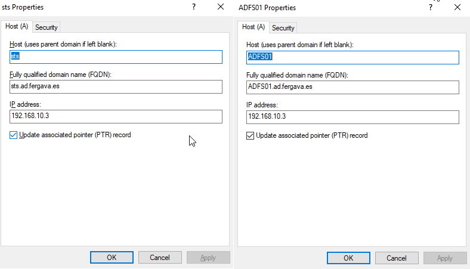

ADFS SSO Configuration
Active Directory Federation Services (ADFS) permite autenticación Single Sign-On (SSO) centralizada. Google delega la autenticación en nuestro servidor local.
> SAML_2.0_Flow
ℹ Concepto: ADFS Farm & HA
Si ADFS cae, NADIE entra en Google. Por eso es vital una Granja (Farm): dos o más servidores ADFS detrás de un balanceador de carga (WLB). Si uno cae, el otro responde.
Preparación del Entorno
📍 DNS & AD InfrastructureAntes de instalar el rol, preparamos la identidad del servicio. Es vital distinguir dos registros DNS:
- Host A Record srv-adfs01.ad.fergava.es (Nombre real de la máquina para gestión/RDP)
- Service A Record sts.ad.fergava.es (Nombre del servicio federado - VIP del balanceador)
- Service Account AD\svc_adfs
Certificados y Confianza
ADFS requiere HTTPS. Creamos un certificado autofirmado para el nombre de servicio.
Tras ejecutar el comando, abre
certlm.msc (Certificados del equipo local) en el servidor. Ve a Personal > Certificados. Busca el certificado "sts.ad.fergava.es", clic derecho > Todas las tareas > Exportar. En el asistente, elige "No exportar la clave privada" y formato DER o Base64 (.CER). Ese es el archivo que usarás en la GPO.
Importamos ese .CER en: Computer Configuration > Policies > Windows Settings > Security Settings > Public Key Policies > Trusted Root Certification Authorities.
> Service Principal Name (SPN)
Esto vincula el nombre DNS del servicio con la cuenta de usuario, permitiendo la autenticación Kerberos.
Configuración del Asistente
📍 Server Manager > ADFS Configuration WizardUna vez instalado el rol, ejecutamos el asistente y configuramos las secciones clave:
- 1. Specify Service Properties SSL Cert: sts.ad.fergava.es (El "Federation Service Name" se auto-rellena con el CN del certificado. DEBE coincidir con el registro DNS A)
- 2. Specify Service Account AD\svc_adfs
- 3. Specify Database WID (Windows Internal Database)
Conectar con Google (Relying Party)
📍 AD FS Management > Relying Party TrustsEnseñamos a ADFS cómo "hablar" con Google Workspace. Configuramos la confianza manualmente usando los datos exactos del SP.
-
SAML 2.0 Service URL (ACS) Endpoints
https://www.google.com/a/ad.fergava.es/acs https://accounts.google.com/samlrp/XXXXXXXXXXXXXXXX
-
Relying Party Identifiers
google.com/a/ad.fergava.es google.com/a/fergava.es https://accounts.google.com/samlrp/XXXXXXXXXXXXXXXX
- Access Control Policy Permit everyone (Permitir a todos)
Reglas de Notificación (Claim Rules)
📍 Edit Claim Issuance PolicySon el "traductor". AD habla "LDAP" (sAMAccountName, UserPrincipalName) y Google habla "SAML" (NameID). Estas reglas cogen el email del AD y lo empaquetan en un sobre XML que Google entiende.
Google requiere un formato muy específico. Si estas reglas fallan, el login dará error 403 o 500.
Rule 1: Get Email
Mapping: E-Mail-Addresses ➔ E-Mail Address
Rule 2: Email to NameID
Incoming: E-Mail Address
Outgoing: Name ID (Format: Email)
Configuración en la Nube
📍 Admin Console > Security > Authentication > SSO with third-party IdPExportamos el certificado "Token-Signing" del ADFS (.CER) y lo subimos a Google para que confíe en nuestros tokens.
AD FS Management > Service > Certificates > Clic derecho en Token-Signing > View Certificate > Details > Copy to File > Elegir formato Base-64 encoded X.509 (.CER).
- Sign-in Page URL https://sts.ad.fergava.es/adfs/ls/
- Sign-out Page URL https://sts.ad.fergava.es/adfs/ls/?wa=wsignout1.0
- IdP Entity ID http://sts.ad.fergava.es/adfs/services/trust
- Verification Certificate Token-Signing.cer (Base64)
Experiencia de Usuario (WIA)
📍 PowerShell & GPOPara evitar que el usuario escriba su contraseña dos veces, habilitamos la Autenticación Integrada de Windows (WIA) para la Intranet. También añadimos soporte para Chrome/Edge.
Añadimos
https://sts.ad.fergava.es a la "Zona de Intranet Local" en los navegadores mediante GPO para permitir el envío automático de credenciales.